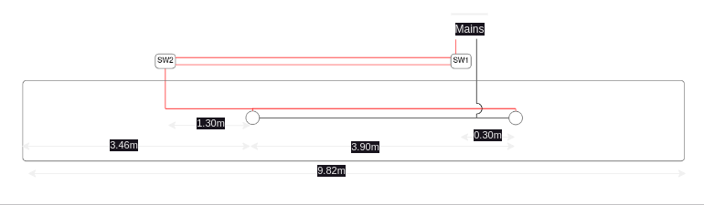
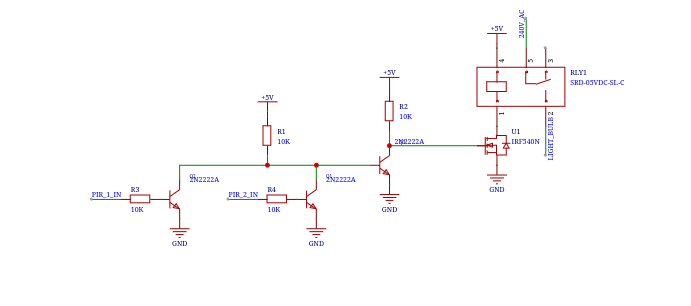
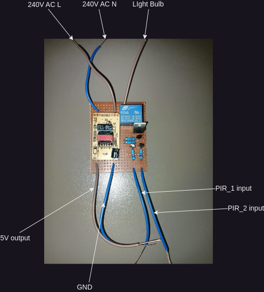

Motion Activated Lights
Understanding the Problem
The goal is to make a set of 2 corridor lights switch on when a passerby walks down the corridor.
All the conditions below must be met for lighting.
Context
There are two lights separated by some distance with two double pole single throw switches separated by some distance.
The diagram below illustrates the wiring diagram of the corridor from a top view.
">
It is important to note that the corridor is quite long. This will be of great importance in the next sections.
Solution
A passive infrared sensor was chosen to detect the motion. The chosen sensor was purchased from . Below is an image of the sensor.

The sensor was chosen since it has provision for adjusting the detection distance as well as the on-time using potentiometers. It also has provision for a light dependent resistor (LDR). The sensor also has a wide range of 120degrees.
In the implementation of this sensor, the LDR may be used to prevent the sensor from outputing a detection signal when there is plenty of light. The PIR sensor has a 1M pull-up resistor in series with the LDR. The output of the PIR sensor can only be activated when motion is detected and the voltage at the common point between the resitor and the LDR is above 0.2V. Since the LDR's resistance reduces with increase in light intensity, when there is ample light, the common point voltage is pulled harder to ground, thus keeping the voltage below 0.2V.
Implementation
In order to achieve the requirements for switching on the lights, 2 PIR sensors were deployed. This was so as to cover the full range of the corridor. This is because the corridor was quite long and the angle of detection of the PIR sensors was 120degrees. They were placed with the angle between their center axis of vision at an angle of about 90degrees. This meant that they shared an angle of vision of
$$ {90 - \frac{120}{2} = 90 - 60 = 30 \deg} $$
And the full angle of vision was
$$ {2 * 120 - 30 = 210 \deg} $$
This means that we have a safety of 15 degrees on either side of the sensor, i.e. if the sensor's angle of vision is less than 120 degrees, it can be up to 90 degrees and we would still achieve full range of vision of 180 degrees.
To take ensure the light is switched on when either sensor was activated an OR gate was designed using transistors (2N2222A). This approach was taken over using an off-the-shelf OR-gate since it was cheaper. The output of the OR-gate was then fed to the gate of an N-channel MOSFET (IRF540N). The MOSFET's source was connected to ground and the drain connected to one coil terminal of a relay. The other coil terminal of the relay was connected directly to the 5V power source. One switched terminal of the relay was connected to the 240V AC line and the other connected to the light bulbs.
Below is the schematic of the implementation circuit.
">
Results
Below is an assembly image of the circuit before being connected to the light bulb's wiring.
">
The circuit worked, switching on the lights when someone passed through the corridor in the dark. It then maintained the light as long as the person moved and went off only when the person was no longer in the corridor or they stayed still for longer than about 1 minute (This was set using the on-time potentiometer on the PIR sensors).
Recommendations
- A better system could be implemented that keeps track of the number of people in the corridor and only switches off the lights when there are no people within the corridor.
- A manual override could be added to allow for switching on of the lights regardless of the ambient light or the presence of motion.